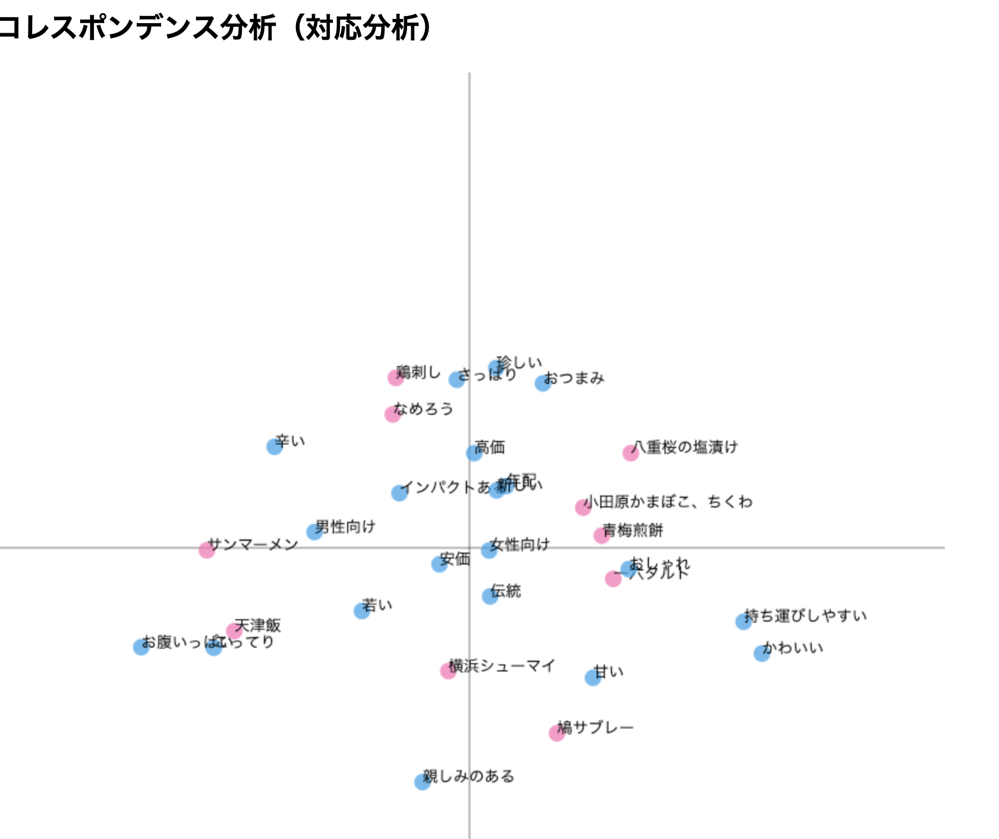
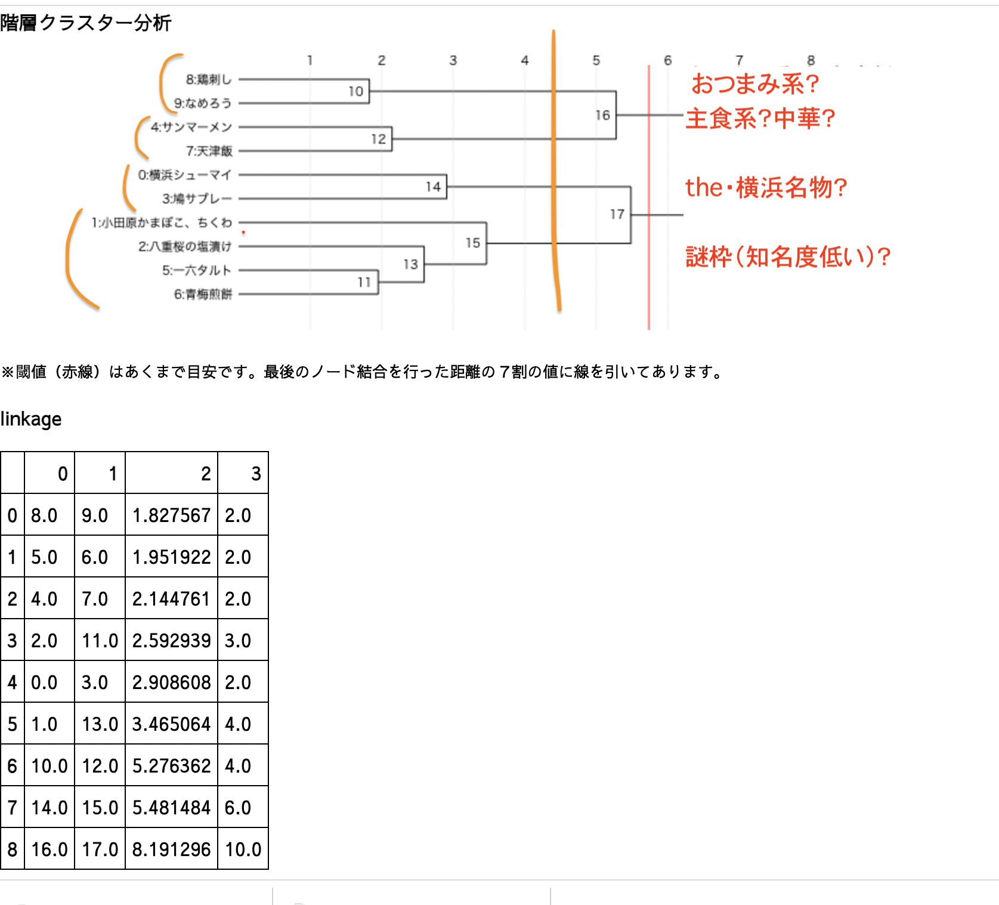
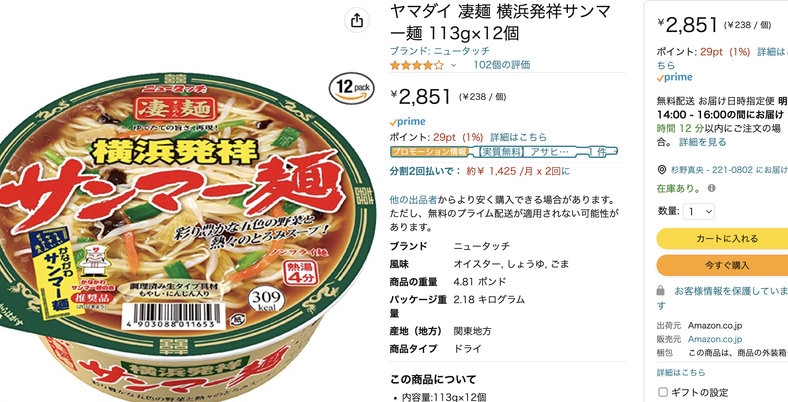

神奈川県名産品100選から加工食品を選び、他県の加工食品の名産品と比較
アンケート結果（CSVファイル）は
こちら
累積寄与率が3%ちょいしかなく、分析には使えず…（一応写真掲載↓）


- 商品名から原産地や商品の雰囲気がイメージできないものが多い？
- 例）小田原かまぼこ→他県の人は多分小田原が何県のどこか知らない
- サンマーメン→麺ぽいのは伝わるが、どこのどんな麺か知名度低い
- 実は全国シェアものでも、知名度低いものがある。
- 例）丹沢の桜の塩漬け：全国シェア7~8割だが、知名度低い
- 原因1：最終製品というより材料扱いなので、塩漬け自体がピックアップされることがない→「丹沢の塩漬けで作ったケーキ」などと最終製品でアピールしてもらう必要あり？
- 原因2：販売地は丹沢のJA（地元）や、成城石井・カルディなど高価格代食料品店がメイン→一般人の目に触れる機会が少ない/目に触れてもお菓子づくり興味ない人には気づかれない
- パッケージ問題
- 例）サンマーメン
- サンマーメンカップラーメンが実はスーパーで売られているが、班員誰も気づかず
- →パッケージが絶望的にみづらい（「サンマーメン」の文字と背景が同化）ため、スーパーでサンマーメンと気づかずスルーしていた可能性あり
画像はアマゾン(外部サイト）より
- 回答者の属性（年代、性別、出身地など）をアンケートで聞いておらず、深い分析ができなかった。
- アンケート項目が多すぎて、回答者の選択が途中から悪い意味で適当になった可能性がある。アンケート作成時に「何を調べたいか」を明確にしてから選択肢を作る必要があった（手当たり次第になんでも聞いても逆によくわからないデータが出てくる）